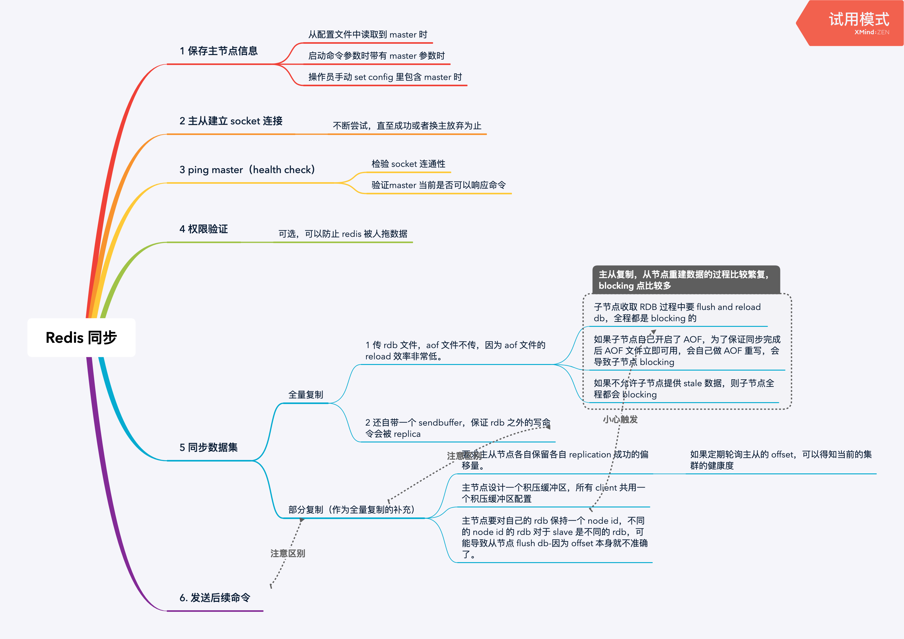

Redis 笔记之八：复制
在分布式系统中为了解决单点问题，必须建立副本复制机制，以解决容灾和负载均衡问题。

配置
建立复制
建立复制共有三种方法：
- 在配置文件中使用如下的配置：slaveof localhost 6379
- 在启动时使用如下命令：redis-server —slaveof localhost 6379
- 在 redis-cli 中对服务端使用 slaveof localhost 6379
而在主节点里可以查看自己的主从信息：
1 | |
可以看到自己的角色：
role:master
而从节点则会看到：
role:slave
断开复制
可以使用如下命令断掉与 master 的联系：
1 | |
- 本节点断开和 master 的连接。
- 本节点自己上升为 master。
也可以使用如下命令切换 master：
1 | |
如果新 master 不同于老 master，老 master 的数据会被清理掉。
安全性
主节点可以设置 requirepass 参数进行验证，这时所有的客户端访问必须使用 auth 命令进行校验。
只读
从节点（默认）使用 slave-read-only = yes 来保证从节点是只读模式的。在生产上最好保持这种不能允许从节点写的模式，否则会导致数据不一致。
传输延迟
关闭 repl-disable-tcp-nodelay 可以降低延迟，但整体带宽使用比较大。
拓扑
一主一从

这种思路是把 slave 当做 standby，只在从节点打开持久化（RDB 或 AOF）。这种场景如果主节点重启，则主节点会自动清空数据（因为没有打开持久化-实际上如果没有打开 AOF 持久化，Redis 的优雅关闭也会回退到 RDB 持久化），从节点也可能清空数据。为了预防这种情况出现，在主节点重启以前从节点要slaveof no one断开主从复制-但这种措施无法阻挡主节点宕机引起的数据丢失。
这种一主一从的架构设计和 MySQL 的主从复制很相似，但只打开一端持久化的思路还是比较特别的，不那么安全。而且主节点 flush 数据会导致从节点也 flush 数据，本身也是一种很危险的行为
一主多从

这种拓扑又被叫做星形拓扑。这种拓扑比较像 MySQL 的读写分离设计，主节点承担写命令的操作，而从节点也分担读命令的操作，。其中还可以设计一些特殊的读节点，专门执行 keys，sort 操作。但这种操作会占用太多的网络带宽。
树状结构

这种树形架构通过分层架构来分层放大流量，平衡了带宽和冗余复制的需要，但下层的节点的同步时延变大了。
原理


过程
1 如果使用配置文件配置主从关系，这一步几乎可以说是一闪而过。这一步只保存 master 的 ip 和 port 。如果这个时候从 master 节点去看 client 信息的话，会看到一个刚刚建立的 client（从主节点的角度来看，从节点实际上也是client，类似某些 kafka 的数据迁移方案迁移的端点把自己伪装成一个 consumer）。
2 从节点内部有个每秒运行的定时任务（大致上是一个定时线程）维护复制相关逻辑，当定时任务发现新的主节点后，会尝试与该节点建立网络连接。从节点会单独打开一个 port（而不是当前从节点的 server 的 port），尝试建立新的 socket。所以 Redis 的主从复制的连接建立是一个拉过程。
34020:S 06 Oct 2019 23:09:28.709 Connecting to MASTER localhost:6379
34020:S 06 Oct 2019 23:09:28.712 MASTER <-> REPLICA sync started
这个过程如果失败，可以在日志中看到以下错误：
34020:S 06 Oct 2019 23:09:38.086 * MASTER <-> REPLICA sync started
34020:S 06 Oct 2019 23:09:38.086 # Error condition on socket for SYNC: Connection refused
从节点会无限重试，直到成功或者主从关系被切断为止。
3 从节点会发送 ping，验证：
- 连接的 socket 是否正常
- 主节点是否能正确响应命令
如果验证成功，能收到：
Master replied to PING, replication can continue…
4 权限验证 如果 master 配置了 requirepass 参数的话，从节点要配置 masterauth 参数来保证密码一致。
5 同步数据集 分为全量同步和部分同步两种策略。
6 命令持续复制 数据集同步完成后。主节点会把自己收到的写命令，持续发给从节点。
同步数据集
注意，全量复制和部分复制都属于同步数据集的一部分，后续的写命令持续发送不是部分复制。
全量复制（Full resync）
在初次复制的场景下，Redis 会使用全量复制策略（对应 Redis 旧版本唯一用于复制的 sync 命令）。主节点的数据会被一次性全部发送给从节点，造成主从节点和网络的很大开销。
一般从节点会打印如下的日志：
34020:S 06 Oct 2019 23:09:39.128 MASTER <-> REPLICA sync started
34020:S 06 Oct 2019 23:09:39.128 Non blocking connect for SYNC fired the event.
34020:S 06 Oct 2019 23:09:39.128 Master replied to PING, replication can continue…
34020:S 06 Oct 2019 23:09:39.129 Partial resynchronization not possible (no cached master)
34020:S 06 Oct 2019 23:09:39.130 Full resync from master: 3e6a48b3ce0d87851c0882f4120145a0d7611f0d:0
34020:S 06 Oct 2019 23:09:39.181 MASTER <-> REPLICA sync: receiving 175 bytes from master
34020:S 06 Oct 2019 23:09:39.182 MASTER <-> REPLICA sync: Flushing old data
34020:S 06 Oct 2019 23:09:39.182 MASTER <-> REPLICA sync: Loading DB in memory
34020:S 06 Oct 2019 23:09:39.182 * MASTER <-> REPLICA sync: Finished with success
证明了部分复制不可能，必须打开全量复制。注意PID 34020:S意味着当前 节点是个 Slave（M意味着 Master 而 C 意味着子进程）。
其全流程如下：

注意：
- 主节点和从节点之间的 复制超时时间一般为 60s，如果数据量很大要调高这个超时阈值，否则从节点会放弃全量复制。- 不要复制太大的数据量！否则就要调高超时
- 主节点在生成 rdb 的过程中，还在不断接受新的命令（因为 bgsave 是由子进程进行操作的），这些新的命令会被保存在一个单独的客户端复制缓冲区里面（注意，和部分复制的replication-backlog 不一样，这里的 buffer 属于未被发送的命令的 buffer）。在 send RDB 以后还要单独再 send buffer 一遍。
- 从节点得到了一个完整的 RDB 文件以后要先 flush old data，然后再进行 load，这个全过程都是阻塞的-这也是 MySQL 不具有，Redis 独有的。
- 如果从节点自己开启了 AOF 功能，为了保证同步完成以后 AOF 文件立刻可用，先启动一段 bgrewriteaof，子进程 rewrite 完成以后全量复制才算收尾-增加了阻塞点。
- 全量复制过程中，子节点的数据可以算是 stale 的。如果关闭了 slave-serve-stale-data，则全量复制过程中从节点是不接受读命令的（写命令更加不会被接受），属于完全阻塞状态。
部分复制（partial replication）
在出现网络闪断等情况时，主节点可以只发送一部分数据给从节点以弥补丢失，效率会很高。
普通的主从建立时，会出现若干次部分复制失败的日志，最终会直接通过全量复制成功-Redis 会优先考虑部分复制的策略。
psync命令需要组件支持以下特性：
- 主从节点各自复制、保存偏移量
- 主节点复制积压缓冲区
- 主节点运行 id
复制偏移量
主节点在自己完成写入后，会累加并保存自己的本地 offset。从节点每次完成复制后，也会上报自己的 offset 到主节点中。所以主节点保存了所有节点的偏移量。
而同步了写命令后，从节点也会累加并保存自己的 offset。
对比主从节点的 offset 的差值可以知道复制延迟多大，从而判定系统健康程度。
复制写命令到复制积压缓冲区
Redis 会针对每个 client 准备一个固定长度的队列- replication-backlog，默认大小为 1mb 作为复制积压缓冲区。所有写命令在被发送给从节点的同时，也会被发送到这个队列里。这个队列实际上记录了已被复制的命令，可以作为日后补偿部分丢失写命令的依据。
注意，这个缓冲区是已被发送的命令数据的缓冲区，只是为了重放闪断数据用的，和全量复制里的 send buffer 用到的 buffer，也不保存复制完以后持续同步的后续命令。
主节点运行 id
每个 Redis 节点都会有一个 40 位的 16 进制字符串来唯一识别节点。
如果主节点重启（必然？）替换了 RDB/AOF 文件（比如两种文件的重写？）的时候会导致节点 id 变化，从节点已经不适用老的 offset， 从节点会重新进行全量复制。-所以尽量不要随便重启主节点
psync 命令
psync 命令要求 Redis 2.8 以上版本，它同时兼容全量复制和部分复制。
其格式如下：
1 | |
runId 为待复制的主节点 id，offset 为已复制的数据偏移量（如果是全量复制，其值为-1）。
从节点发送 psync 命令给主节点，主节点回复不同内容的响应给从节点：
- FULLSYCN {runId} {offset} 从节点将开始全量复制
- +CONTINUE 从节点触发部分复制
- +ERR 主节点的版本低于 2.8，要从 sync 命令开始重新触发全量复制。
全流程

普通的全量复制，一旦遇到网络闪断，肯定会触发超时复制失败，浪费大量的系统开销。但拥有部分复制的流程，在网络中断后，可以尝试用部分复制来修复小部分数据（默认 1MB）。
部分复制只能发送 replication-backlog 里的数据，如果超出了这个缓冲区的范围，复制就会直接像普通的全量复制超时一样失败，然后重启一个新的全量复制。
心跳
主从会相互维护心跳监测：
- 主从会互相模拟成各自的客户端进行通信，也就是会出现在对方的 client list 里。只不过主节点的 flags=M，而从节点的 flags=S。
- 主节点定时发送 ping 命令到各个从节点。
- 从节点定时上报自己的复制偏移量（实际上主从节点都会保存很详细的彼此的进度信息，特别lastest、last 之类的信息，这点同 hdfs、 MySQL 一样，值得学习）。
（后续）命令持续（异步）复制
主节点接下来响应写命令，直接返回客户端写结果，而不受从节点复制结果的影响-如何防止这一步数据丢失？应该还存在若干 offset 回溯的功能来预防这个问题。
开发运维中的问题
读写分离
数据延迟
这个问题是由架构和网络通信的特性决定的，不可避免。我们能够做的就是设立多种监控措施，不断用轮询的方式来发现超高的 lag 及时报警人工干预。
读到过期数据
低版本的从节点不会主动删除数据，除非它收到主节点的 del 命令。高版本的从节点在读取数据的时候也会检查数据是否已经超时，如果没有超时则
主节点删除超时数据有两种策略。实际上现实中的系统必须混合使用两种策略才能安全删除。
惰性删除（用时/读时删除）
在收到读命令的时候检查超时阈值，如果已超时则主动删除，且返回 nil 给客户端，并同步 del 命令到从节点。
实际上 Java 的 weakHashMap 也是采用这种策略来维护自己的数据集的。
定时删除
主节点内部有一个定时任务循环采样数据，发现采样的键过期执行 del 命令，之后再同步到从节点。
从节点故障
如果自己做水平扩展，则故障转移方案（特别是从节点失效的问题）要自己做。所以可以上 Redis-Cluster 这样的现成方案。
主从配置不一致
如果主从的配置不一致，从节点可能无法像主节点一样正常工作。特别是从节点的 maxmemory 不如主节点大的时候，从节点可能会发生内存淘汰而丢失部分数据。-主从节点最好有一样的容量。
规避全量复制
全量复制非常耗费资源，应该注意几个问题：
- 首次复制应该与业务高峰期错开。
- 避免主节点重启导致从节点全量复制，这种情况可以考虑提升从节点为主节点。
- 合理规划配置，避免挤压缓冲区不足，部分复制失败回退回全量复制。
规避复制风暴
Redis 针对主节点做过专门优化，使得多个从节点可以共用针对第一个从节点生成的 RDB 文件。但还存在其他问题，值得注意：
- 应该尽量避免单一主节点复制多个从节点，使用树形架构来节约主节点的带宽。
- 打散多个主节点，避免多个节点一起容灾（同时重启开始复制会拖垮CPU、内存、硬盘和带宽）。